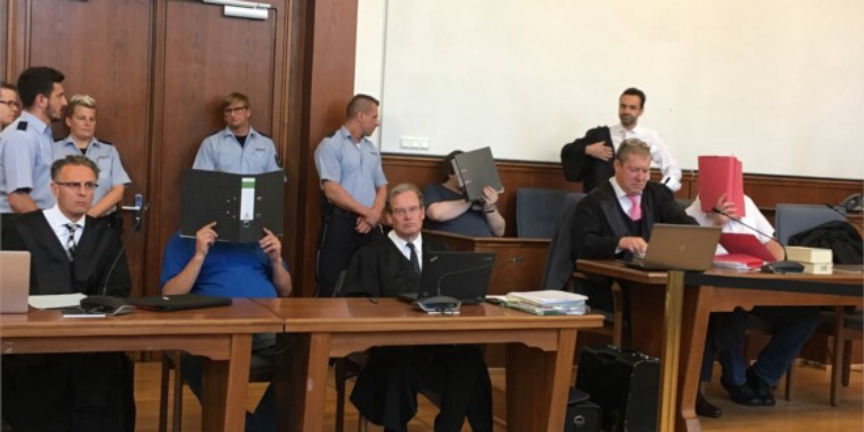
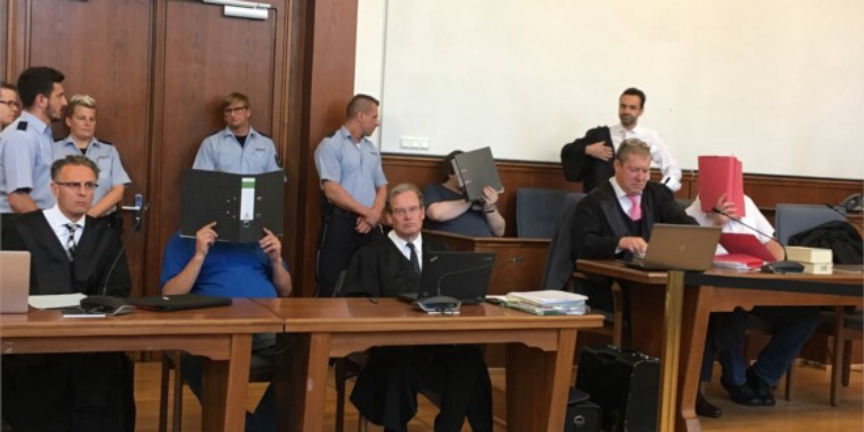

Tabooless Member is Identifying Suspects for Police
~4 min read | Published on 2018-05-10, tagged Child-Abuse using 949 words.
An ongoing case at the district court of Freiburg has revealed more information about members of Tabooless Chat as well as the investigation that ended the site. The case focused on the abuse of a child in Staufen but recent developments revealed that many of the suspects had met on Tabooless, used Tabooless actively, and possibly held administrative (or similar) positions.
During the hearings, the investigators revealed that on September 10, 2017, someone had sent a tip to the LKA and BKA that contained pictures, videos, and information on the identity of the Tabooless administrator named “Commander.”
The Child Abuse
The child abuse case began months ago after the police learned that Markus K., 41, had met with the stepfather of a child he had later sexually assaulted. K. had recently served a prison sentence for raping an adult male. After his release from prison, K joined darknet child abuse sites. The public was excluded from the parts of the hearing that revealed site-specific details. They did learn, though, that K. had met this man in prison and had followed him and his child into parking lots and various buildings before making contact with the child’s father.
Eight criminal cases have originated from the information unveiled during the initial hearing. K. has since been convicted of the following crimes:
Rape; Serious sexual abuse of children; Dangerous bodily injury; Breach of supervision (he was on supervision after release from prison); Obtaining child abuse material; And possessing child abuse material
Christian L., The Informant
He received a ten year sentence. The man he contacted, Christian L., eventually became a vital resource for the prosecution. He willingly sold access to the child K. had seen. K. had contacted Christian L. on Facebook. There, L. offered access to the child of the woman he had been dating or in a relationship with—a German woman named Berrin T.
Christian L., it turned out, had used Tabooless on many occasions. Videos shared on the site matched videos stored on his iPhone and hard drives. The videos revealed that the child’s mother, Berrin T., had not only known the abuse had been occurring but had also appeared in the some of the illicit videos. Through the videos alone, law enforcement collected information on other suspects that, without additional information, proved worthless. With assistance from L., the information became essential to the prosecution.
Tabooless Chat
L. had used Tabooless to contact other pedophiles who lived nearby. He appeared in videos alongside others. However, for reasons unknown to the prosecution, L., started informing on other Tabooless users he had contacted on the site. He also named users he had met on other darknet child abuse sites.
“Everything Mr. L. has said so far has been confirmed.” – Investigator B
The prosecution asked “Investigator B” how important the information provided by L. had proven during the investigation. B. responded, “we would not have caught three of the four culprits without Mr. L.” The video alone would only have led to the conviction of one of the defendants. “Christian L.’s statement was very helpful. Everything Mr. L. has said so far has been confirmed,” B. said.
L. gave the police a list of 120 contacts he had saved on Tor Messenger, the court heard the investigator explain. L. had marked 20 of the names of the users most likely to abuse children or provide access to their own children. The man also told the police of a specific contact named “Dittmarscher” who had spoken of killing children after abusing them. L. also walked the police and courtroom through crime scenes. He told the police where the meetings had taken place and the dates of the meetings. He testified against arrested child abusers he had met and, in some cases, he had abused children alongside the defendant.
When the judge asked the prosecution why L. had provided so much information that both incriminated himself and his former “friends,” the investigators and prosecution admitted they really had no idea.
Tabooless Member “Klaus”
L. readily testified against another child abuser he had met on the darknet. The police had learned of this person through a video found on a USB drive L. had kept at his mother’s house. The video provided information on the defendant—an officer of Customs in Germany—but not enough information to reveal his identity. After a thorough investigation, police discovered that the person L. had identified as the user “Klaus” worked for the unified armed forces of Germany – not Customs.
The police doubted they had captured the correct suspect upon their first encounter. He appeared too calm and collected. However, authorities asked him to change from his military attire into civilian clothing. As he changed, the police noticed a scar that matched the scar of a man in one of the videos retrieved from a USB drive owned by L. The suspect, a man named Knut S., became one of the best examples of the work L. had effectively completed on behalf of the German investigators.
Summary
That is all, for now. Not all of the suspected child abusers named by L., but all the information worth publishing currently. Below is a short list of the individuals caught in the case that began as only a case involving the abuse of a single child.
Berrin T., 47, the mother of children she allowed pedophiles to abuse. Christian L., 39, Berrin’s significant other and the primary informant. Markus K., 41, one of the first convicted in the case thanks to evidence provided by Christian. An unidentified Swiss man named by Christian. Austrian authorities arrested him but he has not been to trial. A 33-year-old Spaniard caught in his home country Knut S., 49, aka “Klaus.” The German soldier. Another unidentified 43-year-old from Schleswig-Holstein. A 32-year-old also from Schleswig-Holstein who, according to Christian, had abused his own daughter.
Major credit is due to Carolin Buchheim of Badische Zeitung for her amazing courtroom reporting.
During the hearings, the investigators revealed that on September 10, 2017, someone had sent a tip to the LKA and BKA that contained pictures, videos, and information on the identity of the Tabooless administrator named “Commander.”
The Child Abuse
The child abuse case began months ago after the police learned that Markus K., 41, had met with the stepfather of a child he had later sexually assaulted. K. had recently served a prison sentence for raping an adult male. After his release from prison, K joined darknet child abuse sites. The public was excluded from the parts of the hearing that revealed site-specific details. They did learn, though, that K. had met this man in prison and had followed him and his child into parking lots and various buildings before making contact with the child’s father.
Eight criminal cases have originated from the information unveiled during the initial hearing. K. has since been convicted of the following crimes:
Christian L., The Informant
He received a ten year sentence. The man he contacted, Christian L., eventually became a vital resource for the prosecution. He willingly sold access to the child K. had seen. K. had contacted Christian L. on Facebook. There, L. offered access to the child of the woman he had been dating or in a relationship with—a German woman named Berrin T.
Christian L., it turned out, had used Tabooless on many occasions. Videos shared on the site matched videos stored on his iPhone and hard drives. The videos revealed that the child’s mother, Berrin T., had not only known the abuse had been occurring but had also appeared in the some of the illicit videos. Through the videos alone, law enforcement collected information on other suspects that, without additional information, proved worthless. With assistance from L., the information became essential to the prosecution.
Tabooless Chat
L. had used Tabooless to contact other pedophiles who lived nearby. He appeared in videos alongside others. However, for reasons unknown to the prosecution, L., started informing on other Tabooless users he had contacted on the site. He also named users he had met on other darknet child abuse sites.
“Everything Mr. L. has said so far has been confirmed.” – Investigator B
photo: dpa
The prosecution asked “Investigator B” how important the information provided by L. had proven during the investigation. B. responded, “we would not have caught three of the four culprits without Mr. L.” The video alone would only have led to the conviction of one of the defendants. “Christian L.’s statement was very helpful. Everything Mr. L. has said so far has been confirmed,” B. said.
L. gave the police a list of 120 contacts he had saved on Tor Messenger, the court heard the investigator explain. L. had marked 20 of the names of the users most likely to abuse children or provide access to their own children. The man also told the police of a specific contact named “Dittmarscher” who had spoken of killing children after abusing them. L. also walked the police and courtroom through crime scenes. He told the police where the meetings had taken place and the dates of the meetings. He testified against arrested child abusers he had met and, in some cases, he had abused children alongside the defendant.
When the judge asked the prosecution why L. had provided so much information that both incriminated himself and his former “friends,” the investigators and prosecution admitted they really had no idea.
Tabooless Member “Klaus”
L. readily testified against another child abuser he had met on the darknet. The police had learned of this person through a video found on a USB drive L. had kept at his mother’s house. The video provided information on the defendant—an officer of Customs in Germany—but not enough information to reveal his identity. After a thorough investigation, police discovered that the person L. had identified as the user “Klaus” worked for the unified armed forces of Germany – not Customs.
The police doubted they had captured the correct suspect upon their first encounter. He appeared too calm and collected. However, authorities asked him to change from his military attire into civilian clothing. As he changed, the police noticed a scar that matched the scar of a man in one of the videos retrieved from a USB drive owned by L. The suspect, a man named Knut S., became one of the best examples of the work L. had effectively completed on behalf of the German investigators.
Summary
That is all, for now. Not all of the suspected child abusers named by L., but all the information worth publishing currently. Below is a short list of the individuals caught in the case that began as only a case involving the abuse of a single child.
Major credit is due to Carolin Buchheim of Badische Zeitung for her amazing courtroom reporting.